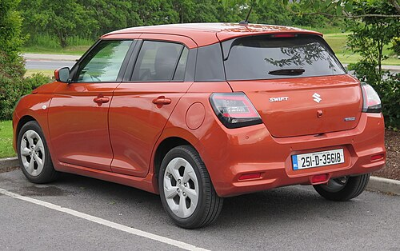
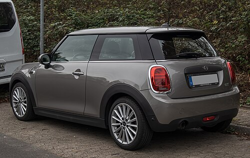
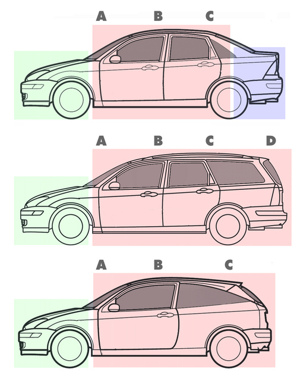
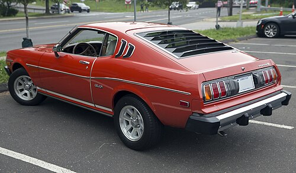
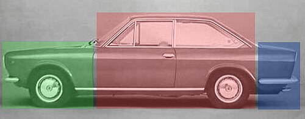
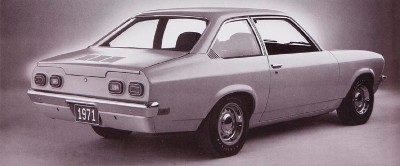
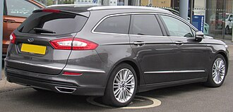
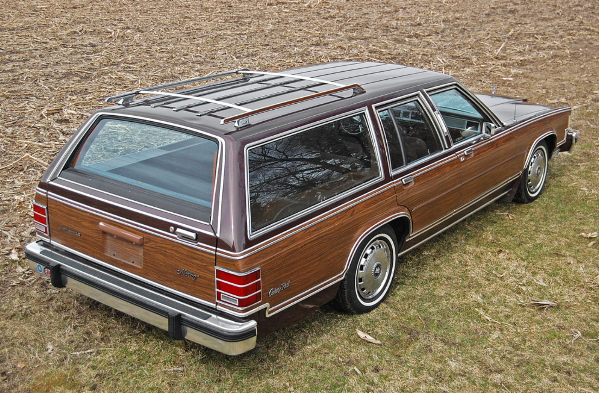

A hatchback is a car body configuration with a "rear door" that swings upward to provide access to a cargo area. In a hatchback, the passenger cabin and trunk space are integrated into a single continuous volume. Hatchbacks are typically described as three-door (two entry doors and the hatch) or five-door (four entry doors and the hatch) cars.



Some models like modern fastbacks feature a "liftback" tailgate. The rear is steeply sloped, but lifts up entirely from the roofline, providing hatchback-like access to the cargo area.

These designs appear to have a "three-box" sedan profile but actually feature a hatchback rear door and trunk lid. The hatch mechanism includes the rear window, opening the entire rear passenger area to the cargo compartment.


While similar, wagons differ slightly from hatchbacks. They feature extended roofs and a D-pillar for maximized cargo space, whereas hatchbacks usually have a steeply raked rear hatch and a more compact overall footprint.


Hatchbacks are incredibly popular in Malaysia, ranging from compact affordable entry-level models to high-performance "hot hatches":
The hatchback's defining feature is its versatile approach to cargo management within a compact footprint:
Hatchbacks share much of their mechanical underpinnings with sedans, meaning they generally offer similar longevity and reliability: